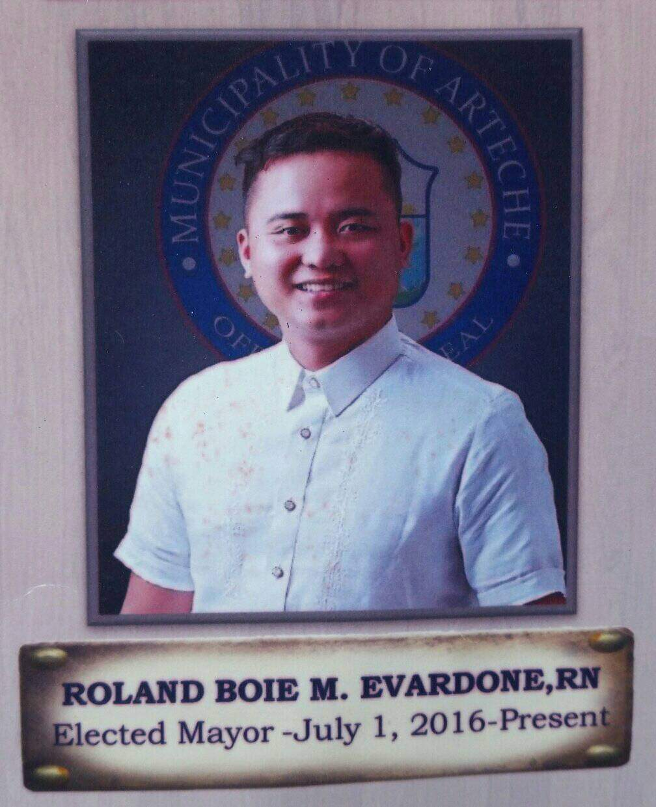

On May 9, 2016, a competent, vibrant, millennial leader- Roland Boie Mejica Evardone on a popular call by his constituents became the 9th elected Mayor of the Municipality or Arteche. By his Arteche Loves You slogan, he aimed higher for Arteche and his people. With his enhanced Comprehensive Development Plan, Public Order and Safety Plan and the recent Local Climate Change Action Plan. In 2018, In his first term as a Mayor, Mayor Bowad’s leadership earned Arteche the elusive Red Orchid award. Arteche became the first and only Smoke-Free municipality in the whole island of Samar to receive such recognition.Red Orchid Award is an award given to municipalities which successfully implemented the anti-smoking ordinance and met the standards on tobacco prevention and control set by the World Health Organization. A milestone that has changed the lives of the people of Arteche and its future generations. In the same year, one of the most significant part of Arteche’s history happened, the founding of Eastern Samar State University-Arteche Campus which have given hope to all High School graduates to study and finish college.
